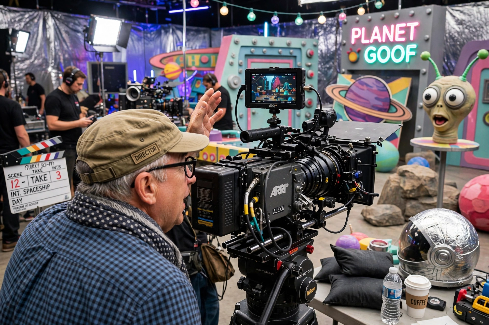

Barry Sonnenfeld (born 1 April 1953) is an American filmmaker and television director. He originally worked as a cinematographer for the Coen brothers before directing films such as The Addams Family (1991), Get Shorty (1995), and the Men in Black trilogy (1997–2012).

Sonnenfeld shot Blood Simple, Raising Arizona and Miller's Crossing for Joel and Ethan Coen, and When Harry Met Sally... His directorial debut was The Addams Family. He also directed Wild Wild West, RV, and episodes of Pushing Daisies and A Series of Unfortunate Events.